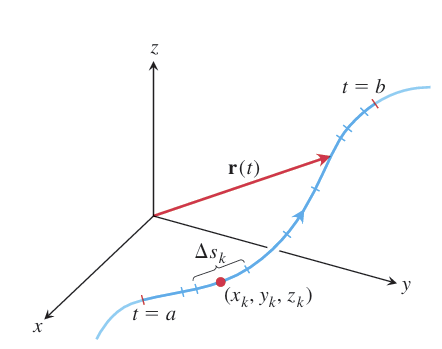
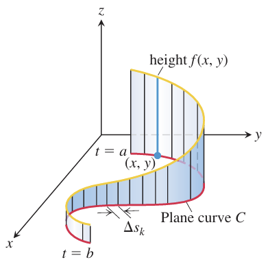
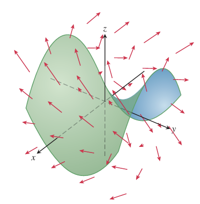
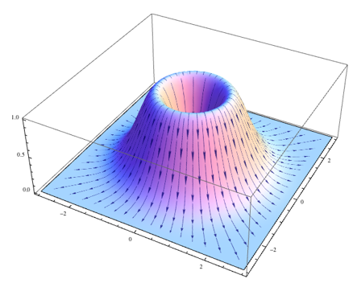
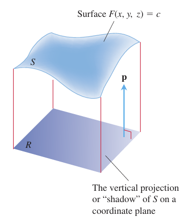

OVERVIEW This chapter extends integration to curves and surfaces in space. Line integrals calculate work along paths and mass of curved wires. Surface integrals determine fluid flow and describe electromagnetic forces.
To calculate quantities like the mass of a wire or work done along a curved path, we use line integrals, an extension of standard integrals. Given a function f(x, y, z) and a curve C, we divide C into small subarcs. Within each subarc, we multiply the function's value at a selected point by the subarc's length and sum these products. As the subarcs become infinitely small, this sum converges to the line integral of f along C. This process is valid when f and the curve are sufficiently smooth.
DEFINITION If f is defined on a curve C given parametrically by r(t) = g(t)i + h(t)j + k(t)k, a ≤ t ≤ b, then the line integral of f over C is
$$\int_C f(x, y, z) ds = \lim_{n \to \infty} \sum_{k=1}^n f(x_k, y_k, z_k) \Delta s_k,$$
provided this limit exists.
How to Evaluate a Line Integral
To integrate a continuous function f(x, y, z) over a curve C:
- Find a smooth parametrization of C, r(t) = g(t)i + h(t)j + k(t)k, a ≤ t ≤ b.
- Evaluate the integral as $$\int_C f(x, y, z) ds = \int_a^b f(g(t), h(t), k(t)) |v(t)| dt.$$
EXAMPLE Integrate f(x, y, z) = x - 3y² + z over the line segment C joining the origin to the point (1, 1, 1).
Solution Since any choice of parametrization will give the same answer, we choose the simplest parametrization we can think of: r(t) = ti + tj + tk, 0 ≤ t ≤ 1.
The components have continuous first derivatives and |v(t)| = |i + j + k| = √(1² + 1² + 1²) = √3 is never 0, so the parametrization is smooth. The integral of f over C is
$$\int_C f(x, y, z) ds = \int_0^1 f(t, t, t) \sqrt{3} dt \quad \text{Eq. (2), ds = |v(t)| dt = √3 dt}$$
$$= \int_0^1 (t - 3t^2 + t) \sqrt{3} dt = \sqrt{3} \int_0^1 (2t - 3t^2) dt = \sqrt{3} [t^2 - t^3]_0^1 = 0.$$
Line Integrals in the Plane
Line integrals in the xy-plane have a visual meaning. Imagine a smooth curve C defined by r(t) = x(t)i + y(t)j. If we move a line along C, perpendicular to the xy-plane and parallel to the z-axis, we create a cylindrical surface. Now, if we have a non-negative function z = f(x, y), its graph forms a surface above the xy-plane. This surface intersects our cylindrical surface, creating a curve above C. The portion of the cylinder beneath this curve and above the xy-plane forms a "curved wall" standing on C. The height of this wall at any point (x, y) along C is f(x, y). By definition, the line integral ∫C f ds represents the area of this "curved wall".
Gravitational and electric forces, having direction and magnitude, form vector fields. We can calculate the work done moving an object through these fields using line integrals. Similarly, velocity fields, like fluid flow, can be analyzed with line integrals to find the flow rate along or across a curve.
Vector Fields
A vector field assigns a vector to each point in its domain. Imagine a fluid flow: each point has a velocity vector. This is a vector field. Similarly, gravitational, electric, and magnetic forces create vector fields. Mathematically, a 3D vector field is defined by F(x, y, z) = M(x, y, z)i + N(x, y, z)j + P(x, y, z)k, where M, N, and P are component functions. Tangent and normal vectors along a curve, as well as gradient vectors of scalar functions, also form vector fields.
Gradient Fields
The gradient vector of a differentiable scalar function f(x, y, z) defines a vector field, known as the gradient field, ∇f = (∂f/∂x)i + (∂f/∂y)j + (∂f/∂z)k. At each point, this field indicates the direction of the function's greatest increase. The magnitude of the gradient vector represents the directional derivative in that direction. Gradient fields can model force fields, fluid motion, or heat flow. In many applications, particularly those involving potential energy, f is taken to be negative. This convention makes the gradient field represent the force that drives the system towards decreasing potential energy.
Line Integrals of Vector Fields
Imagine integrating a force field along a path; this is a line integral of a vector field. Such integrals are crucial in fields like fluid dynamics, work-energy calculations, and electromagnetism.
Given a continuous vector field F = M(x, y, z)i + N(x, y, z)j + P(x, y, z)k and a smooth curve C parameterized by r(t) = g(t)i + h(t)j + k(t)k, we define a direction along C called the forward direction. At each point on C, the unit tangent vector T = dr/ds = v/|v| points in this forward direction. The line integral of F along C is the integral of the scalar tangential component of F, which is found by the dot product F · T = F · (dr/ds).
DEFINITION Let F be a vector field with continuous components defined along a smooth curve C parametrized by r(t), a ≤ t ≤ b. Then the line integral of F along C is
$$\int_C F \cdot T ds = \int_C (F \cdot \frac{dr}{ds}) ds = \int_C F \cdot dr.$$
Evaluating the Line Integral of $$F = Mi + Nj + Pk Along C: r(t) = g(t)i + h(t)j + k(t)k$$
- Express the vector field F along the parametrized curve C as F(r(t)) by substituting the components x = g(t), y = h(t), z = k(t) of r into the scalar components M(x, y, z), N(x, y, z), P(x, y, z) of F.
- Find the derivative (velocity) vector dr/dt.
- Evaluate the line integral with respect to the parameter t, a ≤ t ≤ b, to obtain $$\int_C F \cdot dr = \int_a^b F(r(t)) \cdot \frac{dr}{dt} dt
EXAMPLE Evaluate ∫C F · dr, where $$F(x, y, z) = zi + xyj - y²k$$ along the curve C given by $$r(t) = t²i + tj + √tk, 0 ≤ t ≤ 1.$$
Solution We have $$F(r(t)) = \sqrt{t}i + t³j - t²k$$ $$[z = \sqrt{t}, xy = t³, -y² = -t²]$$ and $$dr/dt = 2ti + j + (1/2√t)k.$$ Thus,
$$\int_C F \cdot dr = \int_0^1 F(r(t)) \cdot \frac{dr}{dt} dt = \int_0^1 \left(2t^{3/2} + t^3 - \frac{1}{2}t^{3/2}\right) dt$$ $$= \left[\frac{3}{2} \cdot \frac{2}{5}t^{5/2} + \frac{1}{4}t^4\right]_0^1 = \frac{17}{20}.$$
Work Done by a Force Field Along a Curve
When a force field F moves an object along a curve C, the work done depends on the force and the path taken. We approximate this work by dividing C into small segments, finding the force's tangential component along each segment, and multiplying it by the segment's length. Summing these approximations gives an estimate of the total work. As the segments shrink, this sum converges to the line integral ∫C F · T ds, which defines the exact work done. This integral can be calculated as ∫ab F(r(t)) · (dr/dt) dt, where r(t) parameterizes the curve. Reversing the direction of C changes the sign of the work done.
EXAMPLE Find the work done by the force field $$F = (y - x²)i + (z - y²)j + (x - z²)k$$ in moving an object along the curve $$r(t) = ti + t²j + t³k, 0 ≤ t ≤ 1, from (0, 0, 0) to (1, 1, 1).$$
Solution First we evaluate F on the curve r(t):
$$F = (y - x²)i + (z - y²)j + (x - z²)k = (t² - t²)i + (t³ - t⁴)j + (t - t⁶)k$$ $$[Substitute: x = t, y = t², z = t³.] = 0i + (t³ - t⁴)j + (t - t⁶)k.$$
Then we find dr/dt, dr/dt = d/dt (ti + t²j + t³k) = i + 2tj + 3t²k.
Finally, we find F · dr/dt and integrate from t = 0 to t = 1:
F · dr/dt = [(t³ - t⁴)j + (t - t⁶)k] · (i + 2tj + 3t²k) = (t³ - t⁴)(2t) + (t - t⁶)(3t²) = 2t⁴ - 2t⁵ + 3t³ - 3t⁸. [Evaluate dot product.]
$$\text{Work} = \int_a^b F \cdot \frac{dr}{dt} dt = \int_0^1 (2t^4 - 2t^5 + 3t^3 - 3t^8) dt$$ $$= \left[\frac{2}{5}t^5 - \frac{2}{6}t^6 + \frac{3}{4}t^4 - \frac{3}{9}t^9\right]_0^1 = \frac{29}{60}.$$
Flux Across a Simple Closed Plane Curve
Flux measures the rate a fluid enters or leaves a region enclosed by a simple closed curve C. It's calculated by integrating the normal component of the fluid's velocity field F across C. We focus on the normal component (F · n) because it determines flow across C.
DEFINITION If C is a smooth simple closed curve in the domain of a continuous vector field F = M(x, y)i + N(x, y)j in the plane, and if n is the outward-pointing unit normal vector on C, the flux of F across C is
$$\text{Flux of F across C} = \int_C F \cdot n ds.$$
$$n = T \times k = \left(\frac{dx}{ds}i + \frac{dy}{ds}j\right) \times k = \frac{dy}{ds}i - \frac{dx}{ds}j.$$
If F = M(x, y)i + N(x, y)j, then
$$F \cdot n = M(x, y)\left(\frac{dy}{ds}\right) - N(x, y)\left(\frac{dx}{ds}\right).$$
Hence,
$$\int_C F \cdot n ds = \int_C \left(M\frac{dy}{ds} - N\frac{dx}{ds}\right) ds = \oint_C M dy - N dx.$$
$$\text{Flux of F = Mi + Nj across C} = \oint_C M dy - N dx$$
The integral can be evaluated from any smooth parametrization x = g(t), y = h(t), a ≤ t ≤ b, that traces C counterclockwise exactly once.
EXAMPLE Find the flux of F = (x - y)i + xj across the circle x² + y² = 1 in the xy-plane.
Solution The parametrization $$r(t) = (cos t)i + (sin t)j, 0 ≤ t ≤ 2π,$$ traces the circle counterclockwise exactly once.
With $$M = x - y = cos t - sin t,$$ $$dy = d(sin t) = cos t dt,$$ $$N = x = cos t,$$ $$dx = d(cos t) = -sin t dt,$$ we find
$$\text{Flux} = \oint_C M dy - N dx = \int_0^{2\pi} (\cos^2 t - \sin t \cos t + \cos t \sin t) dt$$ $$\quad \text{Eq. (9)} = \int_0^{2\pi} \cos^2 t dt = \int_0^{2\pi} \frac{1 + \cos 2t}{2} dt = \left[\frac{t}{2} + \frac{\sin 2t}{4}\right]_0^{2\pi} = \pi.$$
The flux of F across the circle is π. Since the answer is positive, the net flow across the curve is outward. A net inward flow would have given a negative flux.
Gravitational and electric fields are examples of vector fields where the work done moving an object depends only on the starting and ending points, not the path taken.
Path Independence
For some vector fields, the line integral between two points is the same regardless of the path taken. Such integrals are called path-independent, and the fields are conservative. A field is conservative if and only if it's the gradient of a scalar potential function. Once a potential function 'f' is found, the line integral between points A and B simplifies to f(B) - f(A).
$$\int_A^B F \cdot dr = \int_A^B \nabla f \cdot dr = f(B) - f(A).$$
Conservative fields also have the property that their line integral around any closed path is zero.
Line Integrals in Conservative Fields
THEOREM 1- Fundamental Theorem of Line Integrals
Let C be a smooth curve joining the point A to the point B in the plane or in space and parametrized by r(t). Let f be a differentiable function with a continuous gradient vector F = ∇f on a domain D containing C. Then
$$\int_C F \cdot dr = f(B) - f(A).$$
EXAMPLE Suppose the force field F = ∇f is the gradient of the function $$f(x, y, z) = -1 / (x² + y² + z²).$$
Find the work done by F in moving an object along a smooth curve C joining (1, 0, 0) to (0, 0, 2) that does not pass through the origin.
Solution An application of Theorem 1 shows that the work done by F along any smooth curve C joining the two points and not passing through the origin is
$$\int_C F \cdot dr = f(0, 0, 2) - f(1, 0, 0) = -\frac{1}{4} - (-1) = \frac{3}{4}.$$
Surfaces in space can be defined explicitly (z = f(x, y)), implicitly (F(x, y, z) = 0), or parametrically. A parametric surface uses two parameters, u and v, to define a point on the surface as r(u, v) = f(u, v)i + g(u, v)j + h(u, v)k. This vector function r maps a region R in the uv-plane to the surface S. We often consider R to be a rectangle for simplicity. This parametric form allows us to express the surface using three equations: x = f(u, v), y = g(u, v), and z = h(u, v).
EXAMPLE 1 Find a parametrization of the cone z = √(x² + y²), 0 ≤ z ≤ 1.
Solution Here, cylindrical coordinates provide a parametrization. A typical point (x, y, z) on the cone has x = r cos θ, y = r sin θ, and z = √(x² + y²) = r, with 0 ≤ r ≤ 1 and 0 ≤ θ ≤ 2π. Taking u = r and v = θ gives the parametrization
$$r(r, \theta) = (r \cos \theta)i + (r \sin \theta)j + rk, \quad 0 \le r \le 1, \quad 0 \le \theta \le 2\pi.$$
The parametrization is one-to-one on the interior of the domain R, though not on the boundary tip of its cone where r = 0.
Surface Area
To find the area of a parametric surface r(u, v), we approximate it using small parallelograms. The vectors ru and rv, partial derivatives of r, are tangent to the surface. Their cross product, ru × rv, is normal to the surface. We approximate a small surface patch with a parallelogram having sides Δu ru and Δv rv, whose area is |ru × rv| Δu Δv. Summing these areas and taking the limit as Δu and Δv approach zero yields the surface area integral: ∫∫R |ru × rv| dA. This integral can be abbreviated as ∫∫S dσ, where dσ = |ru × rv| du dv is the surface area differential.
DEFINITION The area of the smooth surface r(u, v) = f(u, v)i + g(u, v)j + h(u, v)k, a ≤ u ≤ b, c ≤ v ≤ d is
$$A = \iint_R |r_u \times r_v| dA = \int_c^d \int_a^b |r_u \times r_v| du dv.$$
EXAMPLE Find the surface area of the cone in Example 1.
Solution In Example 1, we found the parametrization
$$r(r, \theta) = (r \cos \theta)i + (r \sin \theta)j + rk, \quad 0 \le r \le 1, \quad 0 \le \theta \le 2\pi.$$
we first find rr × rθ:
$$r_r \times r_\theta = \begin{vmatrix} i & j & k \\ \cos \theta & \sin \theta & 1 \\ -r \sin \theta & r \cos \theta & 0 \end{vmatrix}$$ $$= -(r \cos \theta)i - (r \sin \theta)j + (r \cos^2 \theta + r \sin^2 \theta)k$$ $$= -(r \cos \theta)i - (r \sin \theta)j + rk.$$
Thus, |rr × rθ| = √(r² cos² θ + r² sin² θ + r²) = √(2r²) = √2 r. The area of the cone is
$$A = \int_0^{2\pi} \int_0^1 |r_r \times r_\theta| dr d\theta$$
$$= \int_0^{2\pi} \int_0^1 \sqrt{2} r dr d\theta = \int_0^{2\pi} \frac{\sqrt{2}}{2} d\theta = \frac{\sqrt{2}}{2} (2\pi) = \pi\sqrt{2}.$$
Implicit Surfaces
Surfaces can be defined implicitly by an equation F(x, y, z) = c, where c is a constant. These surfaces are called level surfaces and don't have explicit parametrizations. Examples include equipotential surfaces in physics.
Formula for the Surface Area of an Implicit Surface
The area of the surface F(x, y, z) = c over a closed and bounded plane region R is
$$\text{Surface area} = \iint_R \frac{|\nabla F|}{|\nabla F \cdot p|} dA,$$
where p = i, j, or k is normal to R and ∇F · p ≠ 0.